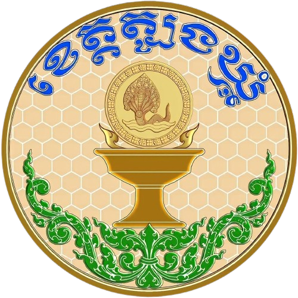
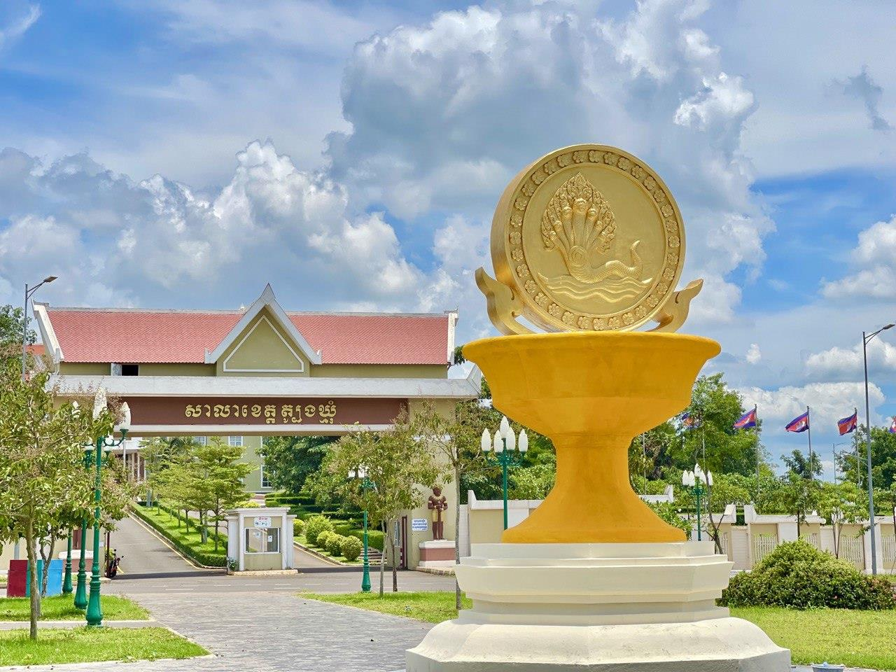
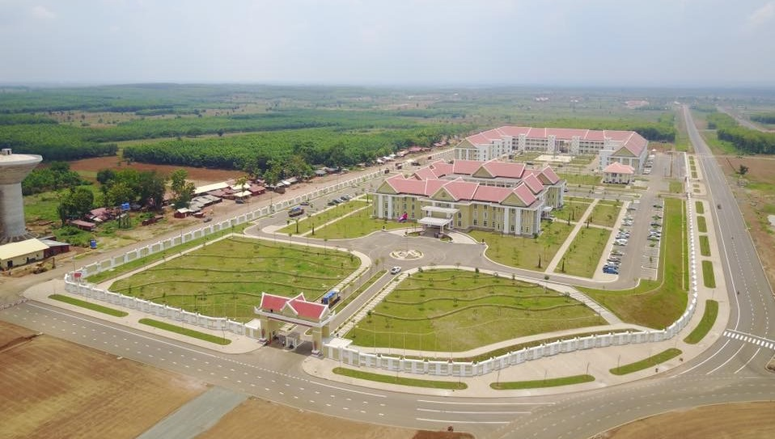
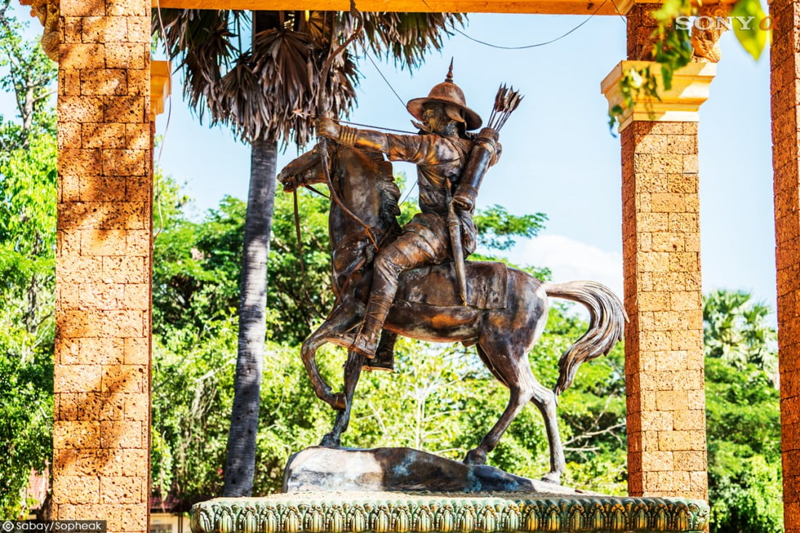

ត្បូងឃ្មុំ គឺជាខេត្តនៃកម្ពុជាស្ថិតនៅវាលទំនាបកណ្ដាលនៃទន្លេមេគង្គ។ មានព្រំប្រទល់ជាប់ខេត្តកំពង់ចាមនៅខាងលិច ក្រចេះនៅខាងជើង ព្រៃវែងនៅខាងត្បូង និង មានព្រំដែនអន្តរជាតិរួមជាមួយវៀតណាមនៅខាងកើត។ ទីរួមខេត្តហើយក៏ជាទីក្រុងធំបំផុតគឺសួង។
ខេត្តត្បូងឃ្មុំត្រូវបានបង្កើតឡើងនៅពេលដែលខេត្តកំពង់ចាមត្រូវបានបំបែកជាពីរដោយព្រះរាជក្រឹត្យឡាយព្រះហស្តលេខានៅថ្ងៃទី៣១ ខែធ្នូ ឆ្នាំ២០១៣ ដោយព្រះមហាក្សត្រព្រះបាទនរោត្តមសីហមុនី តាមអនុសាសន៍របស់សម្តេចនាយករដ្ឋមន្ត្រី ហ៊ុន សែន។ ខេត្តនេះមានភាគរយខ្ពស់បំផុតនៃចំនួនជនជាតិចាមដែលកំពុងតែរស់នៅក្នុងប្រទេសគឺ ១១.៨% ។
ខេត្តត្បូងឃ្មុំ មានឈ្មោះល្បីល្បាញ តាំងពីសម័យលង្វែកមកម្ល៉េះ ដោយសារតំបន់នេះទាក់ទងដល់រឿងទុំទាវ។ ពីមុនត្បូងឃ្មុំជាខេត្ត ឬភូមិភាគ ដែលបុរាណហៅថា “ដី”(ក្សេត្រ) គ្រប់គ្រងដោយស្តេចត្រាញ់មានខេត្តចំណុះជាច្រើន។ ឯប្រវត្តិឈ្មោះខេត្តនេះមានការចងចាំតៗ គ្នា ពីមនុស្សមួយជំនាន់ទៅមួយជំនាន់។ ក្នុងដំណាលនោះបានពោលតៗគ្នាថា មូលហេតុដែលស្រុកនេះមានឈ្មោះត្បូងឃ្មុំ ក៏ដោយសារពីដើមមានដើមស្ពុងធំមួយដុះជាប់នឹងផ្លូវ ហើយនៅមែកស្ពុងនោះមានឃ្មុំធំ១សំបុក។ ឃ្មុំនោះកាចខ្លាំងណាស់ ឲ្យតែមានអ្នកដំណើរណាដើរតាមផ្លូវ ហើយវាធុំក្លិនមនុស្ស ក៏ហើរមកទិចរត់មិនសព្វដី។ ឯអ្នកដែលត្រូវឃ្មុំទិចនោះចិត្តល្អ ក៏ប្រាប់អ្នកស្រុកឯទៀតថា បើចង់ឆ្លងកាត់ត្រង់ចំណុចដើមស្ពុងនោះ ត្រូវដើរពីខាងត្បូងឃ្មុំ (ខាងក្រោមខ្យល់) ដើម្បីកុំឲ្យឃ្មុំវាធំក្លិន បើពុំនោះទេ ច្បាស់ជាវាហើរ មកទិចមិនខាន។ តាំងពីពេលនោះមកមនុស្សក៏ប្រាប់តៗគ្នា ជាប់ឈ្មោះថា “ត្បូងឃ្មុំ” រហូតទល់សព្វថ្ងៃ។
បើយោងតាមឯកសារខ្លះក៏ចារទុកយ៉ាងនេះដែរ សូម្បីតែកាលពីសម័យស្រីសន្ធរក្នុងពេលយាយផាន់ កុហកនាងទាវជាកូនស្រីឲ្យមករៀបការជាមួយម៉ឺនងួន ក៏ឧកញ៉ាអជ៌ុនបានចាត់បរិវារឲ្យបររទេះគោ រទេះក្របីដឹកភ័ស្តុភារដង្ហែតាមផ្លូវពីខាងត្បូងឃ្មុំដែរ ហើយអ្នកចូលរួមក្នុងពិធីរៀបការនោះ ត្រូវទទួលទោសប្រហារជីវិត និងដាក់បញ្ចូលជា “អ្នកងារ” ដែលអ្នកសិក្សាអក្សរសិល្ប៍ខ្មែរ រឿងទុំទាវ សុទ្ធតែបានដឹងគ្រប់គ្នា។ ដោយឡែកយោងតាមឯកសារខ្លះបានសរសេរថាដើមឡើយនៅទីអារាមចាស់ ដែលមានទីតាំងនៅលើទួលមួយនោះ គ្មានព្រះសង្ឃគង់នៅទេគឺមានតែយាយជីក្រមុំម្នាក់ឈ្មោះ កែ រស់នៅតែម្នាក់ឯងនៅក្បែរវត្តមានដើមបេងដ៏ធំមានឃ្មុំ១សំបុកទំនៅលើមែក ហើយឃ្មុំនេះកាចណាស់ គ្មានអ្នកណាហ៊ានទៅជិតទេ។ ដូនជីនោះតែងតែប្រាប់អ្នកដំណើរឲ្យដើរពីខាងត្បូងឃ្មុំ ដើម្បីកុំឲ្យឃ្មុំធុំក្លិន វាមកទិចមិនខាន។ ពាក្យថា “ដើរខាងត្បូងឃ្មុំ” ក៏ហៅយារៗក្លាយទៅជា “ត្បូងឃ្មុំ” វិញពុំមែនគុជឃ្មុំ ម្យ៉ាងដែលគេប្រើធ្វើត្បូងចិញ្ចៀននោះទេ។ ចំណេរតមក ដើមបេងនោះ ត្រូវដើមជ្រៃ ដុះរឹតរួតខ្លាំង ក៏ងាប់ទៅ ប៉ុន្តែ ទីនោះ អ្នកស្រុកមានជំនឿថា មានអ្នកតាគង់សណ្ឋិតដែលអ្នកមានបណ្តាស័ក្តិដើរកាត់មិនបានឡើយច្បាស់ជាធ្លាក់បុណ្យស័ក្តិ។
ដោយឡែកខេត្តត្បូងឃ្មុំ ពីបុរាណគ្រប់គ្រងដោយស្តេចត្រាញ់ ស័ក្តិ១០ហ៊ូពាន់ មានគោរម្យ៍ងារជា “អ្នកឧកញ៉ាអជ៌ូន”។ ស្តេចត្រាញ់ មានអំណាច អាចកាប់សំលាប់ជនណាក៏បាន ប៉ុន្តែ ក្រោយមក ព្រះមហាក្សត្របានដកសិទ្ធិអំណាចបន្តិចម្តងៗ។ សព្វថ្ងៃ ក្រុងសួង ក៏ដូចផ្សារសួង ជាអតីតដែនដីស្រុកត្បូងឃ្មុំ ដែលមានដើមពោធិ៍២ដើម កាលគេចាប់ទុំ ទៅសំលាប់ និងអតីតផ្ទះយាយផាន់ ជាតឹកតាងស្រាប់៕
តាមពិតទៅ ខេត្តត្បូងឃ្មុំ ពុំមែនជាឈ្មោះខេត្តថ្មីនោះទេ ឈ្មោះស្រុក ឬខេត្តត្បូងឃ្មុំ បានលេចឡើងដំបូងក្នុងសិលាចារឹកសម័យក្រោយអង្គរ (IMA.37) ចារនៅលើ ជញ្ជាំងនៃស្លាបខាងជើង រោងទងខាងកើត នៃប្រាសាទអង្គរវត្តរួចទៅហើយ។ សិលាចារឹកនេះ ចារដោយបុរសម្នាក់ឈ្មោះជយនន្ទនៅឆ្នាំ១៧០១។ ក្នុងសិលាចារឹកដដែលនេះ គឺចាររៀបរាប់ពីព្រឹត្តការណ៍ដែលព្រះរាជាបានដំឡើង បុណ្យសក្តិឱ្យគាត់មានងារជាស្តេចក្រាញ់ “អរជូន” ត្រួតត្រាដែនដីខេត្តត្បូងឃ្មុំ។ រហូតដល់ដើមសតវត្សទី១៩ ឃើញមានឯកសារមួយចំនួនដូចជា ព្រះរាជពង្សាវតារស្នាដៃអក្សរសិល្ប៍រឿងទុំទាវ រឿងហ្លួងព្រះស្តេចកនដែល ជារឿងព្រេងនិទានបែបប្រវត្តិសាស្ត្រ ព្រមទាំងឯកសារប្រវត្តិសាស្ត្រជាច្រើនទៀត ទាំងភាសាខ្មែរ និងបរទេស ហើយភាគច្រើនឯកសារជាភាសាបារាំងសុទ្ធតែ បានសរសេររៀបរាប់អំពីឈ្មោះស្រុក ឬខេត្តត្បូងឃ្មុំ។ នៅពេលប្រទេសខ្មែរស្ថិតក្រោមរបបអាណាព្យាបាលរបស់បារាំងចន្លោះឆ្នាំ១៨៦៣ ដល់១៩៥៣ ឃើញមានឯកសារដែលសរសេរពីការបង្កើតខេត្តស្រុក ខណ្ឌ ឃុំ និងភូមិ។ ជាក់ស្តែងខេត្តកំពង់ចាមបង្កើតនៅថ្ងៃទី១ ខែមករា ឆ្នាំ១៨៨៥ ហើយមន្ត្រីបារាំង ម្នាក់ឈ្មោះ ហ្វ្រង់ស័រ បូឌាន់ (Francois Baudoin) ជាអ្នកត្រួតត្រាពី លើចៅហ្វាយខេត្ត ខ្មែរ។ ខេត្តកំពង់ចាមកាលណោះ មានស្រុកចំនួនដប់ជាចំណុះ គឺស្រុកកំពង់សៀម ក្រូចឆ្មារ ព្រៃឈរ ជើងព្រៃ កងមាស កោះសូទិន ស្រីសន្ធរ មេមត់ ស្ទឹងត្រង់ និងស្រុកត្បូងឃ្មុំ។ កំណែទម្រង់លើវិស័យរដ្ឋបាលនៅក្នុងរបបអាណាព្យាបាលបារាំង បានធ្វើឡើងជាបន្តបន្ទាប់ពិសេសក្នុងរាជ្យព្រះបាទអង្គឌួង និងព្រះបាទនរោត្តម។ នៅក្នុងឆ្នាំ១៨៩៧ ត្បូងឃ្មុំត្រូវគេដំឡើងពីស្រុកឱ្យទៅជាខេត្ត ដែលកាលណោះ មានខេត្តចំនួន ៥៧ ប៉ុន្តែពុំមានខេត្តកំពង់ចាមទេ។ លុះដល់ឆ្នាំ១៩១៧ មានការរុះរើចំនួនខេត្តម្តងទៀត ដោយបន្ថយពី ៥៧ខេត្តមកនៅត្រឹម ៥១ខេត្តវិញ ហើយត្បូងឃ្មុំនៅជាខេត្តដដែល។ រហូតដល់ទសវត្ស១៩២០ ក៏មានកំណែទម្រង់រចនា សម្ព័ន្ធវិស័យរដ្ឋបាលជាថ្មីទៀត ហើយនៅពេលនោះរក្សាទុកខេត្តតែ ១៣ ប៉ុណ្ណោះ ដោយត្បូងឃ្មុំធ្លាប់ជាខេត្តកាលពីមុនមកនោះ ត្រូវប្រែក្លាយឱ្យទៅជាស្រុកមួយរបស់ ខេត្តកំពង់ចាមវិញ។ ចាប់ពីពេលនោះមក យើងពុំឃើញមានការផ្លាស់ប្តូរទៀតឡើយ រហូតមកទល់នឹងឆ្នាំ២០១៤ ទើបរាជរដ្ឋាភិបាលកម្ពុជា សម្រេចប្រែក្លាយទឹកដីត្បូងឃ្មុំ ឱ្យទៅជាខេត្តវិញ ដូចពីអតីតកាលជាង ១០០ឆ្នាំមុន។
ការសិក្សាស្រាវជ្រាវរបបគំហើញ និងឯកសារពាក់ព័ន្ធជាច្រើនទៀត បានបញ្ជាក់យ៉ាង ច្បាស់ថាកំណើតទឹកដីត្បូងឃ្មុំ បានកកើតឡើងតាំងពីសម័យបុរេប្រវត្តិសាស្ត្រប្រហែល ១០០០ឆ្នាំមុនគ្រិស្តសករាជមកម្ល៉េះ ដែលមានមនុស្សមកតាំងទីលំនៅជាក្រុម ឬជាសហគមន៍។ ជាក់ស្ដែងតាមរយៈកំណាយនៅស្ថានីយ៍បន្ទាយគូ នៅក្នុងស្រុក ពញាក្រែក និងស្រុកមេមត់កន្លងមក បានរកឃើញដូចជា៖ កុលាបភាជន៍ ឧបករណ៍ថ្ម ខ្នារថ្ពិចអំបោះ គ្រាប់លុញ កងដៃថ្ម អង្កាំថ្ម ជាដើម។ ចំណែកកំណាយនៅទីបញ្ចុះសពស្ថិត នៅឃុំវាលម្លូ ស្រុកពញាក្រែកឯណេះវិញ បានរកឃើញក្អម ឆ្នាំង ឧបករណ៍ថ្ម គ្រឿងអលង្ការ ធ្វើពីសំរឹទ្ធ និងដែក អង្កាំកែវ ក្រវិលកែវ កាំបិតស្នៀត លំពែង ។ល។ រីឯនៅតាមទួល ស្ថានីយដែលអ្នកស្រុកហៅ “ភ្នំអំបែង”ឬ “ទួលអំបែងចេះ” ស្ថិតនៅឃុំប្រធាតុ ស្រុកអូរាំងឪ និងឃុំថ្មពេជ្រស្រុកត្បូងឃ្មុំ ក៏បានរកឃើញសំណល់ ជាវត្ថុប្រើប្រាស់ប្រចាំថ្ងៃ ដូចជា៖ អំបែង ក្អម ឆ្នាំង និងឧបករណ៍ថ្មជាដើម។
ទន្ទឹមនឹងនេះ សំណង់ប្រាសាទនិងសំណង់ស្ថាបត្យកម្មដែលបានសាងសង់ ក្នុងសម័យមុនអង្គរដែលនៅសេសសល់សព្វថ្ងៃនេះរួមមាន៖ ប្រាសាទ ព្រះធាតុព្រះស្រី (ព្រះធាតុបាស្រី) សង់នៅសតវត្សទី ៦ ប្រាសាទខ្នាយវាន សង់នៅសតវត្សទី ៦-៧ ប្រាសាទព្រះធាតុ សង់នៅឆ្នាំ ៦៥៥ ប្រាសាទដំរិលប្រាសាទព្រះធាតុស្រម ទួលយាយទេព និងផ្ដែរនៅវត្តដូនរតន៍។ ដោយឡែកដើមសម័យអង្គរនៅចន្លោះចុងសតវត្សទី ៨ និងដើមសតវត្សទី ៩ ព្រះបាទជ័យវរ្ម័នទី២ បានបង្កើតទីក្រុងមួយស្ថិតក្នុងភូមិសាស្ត្រ ទឹកដីត្បូងឃ្មុំសព្វថ្ងៃនៅក្នុងឃុំដូនតី ស្រុកពញាក្រែក ដែលមានឈ្មោះថា “ឥន្ទ្របុរ” ជារាជធានីដំបូងរបស់ព្រះអង្គមុនពេលដែលទ្រង់យាងទៅគង់នៅតំបន់អង្គរ ខេត្តសៀមរាប។
ក្នុងសម័យក្រោយអង្គរ ព្រឹត្តិការណ៍ជាប្រវត្តិសាស្ត្រធំៗ ពីរបានកើតឡើង។ ទីមួយ ក្នុងរជ្ជកាលហ្លួងព្រះស្ដេចកន បានសាងសង់រាជធានីបន្ទាយព្រៃនគរក្នុងឆ្នាំ ១៥១៤ សព្វថ្ងៃហៅថា “ព្រៃនគរក្នុង”ស្ថិតក្នុងភូមិចន្លក់ដូនតី ខេត្តត្បូងឃ្មុំ ដោយដាក់ឈ្មោះថា “ក្រុងស្រឡប់ពិជ័យបន្ទាយព្រៃនគរ” ឬ “ក្រុងស្រឡប់ដូនតីព្រៃនគរបវររាជធានី”។ ទីពីរ រឿងទុំទាវដែលបានរំលេចរឿងរ៉ាវជាច្រើនទាក់ទងទឹកដីខេត្តត្បូងឃ្មុំក្នុងអំឡុងចុងសតវត្សទី១៦ ដោយមានស្ដេចក្រាញ់ឧកញ៉ាអរជូន ជាអ្នកគ្រប់គ្រងទឹកដីត្បូងឃ្មុំ។ រឿងទុំទាវបានដក់ជាប់ក្នុងអារម្មណ៍របស់មនុស្សគ្រប់មជ្ឈដ្ឋានមកទល់សព្វថ្ងៃនេះ។
គួរបញ្ជាក់ថាមុនការត្រួតត្រារបស់បារាំង ដែនដីខ្មែរទាំងមូលបានបែងចែកជាតំបន់ ដែលខ្មែរបុរាណហៅថា “ដី” ហើយ “ដី” នីមួយៗ មានពី ៦ ទៅ ១០ ខេត្ត គ្រប់គ្រងផ្ទាល់ដោយព្រះរាជាឧបរាជ្យ និងព្រះរាជមាតា។ លុះក្រោយមកស្ថិតក្រោម អំណាចត្រួតត្រារបស់រាជវង្ស “ដី” នីមួយៗ ត្រូវបានព្រះរាជាប្រគល់ឲ្យមន្ត្រីជាន់ខ្ពស់ ដែលកាលនោះ មានងារជាស្ដេចក្រាញ់ ជាអ្នកគ្រប់គ្រង។ ជាក់ស្ដែងនៅក្នុង រាជ្យរបស់ព្រះបាទស្រីធម្មរាជា (១៦២៩-១៦៣០) បានតែងតាំងស្ដេចក្រាញ់ប្រាំរូប ឲ្យត្រួតត្រាដែនដីចំនួន ៥ គឺដីត្បូងឃ្មុំគ្រប់គ្រងដោយឧកញ៉ាអរជូន ដីកំពង់ស្វាយគ្រប់គ្រងដោយឧកញ៉ាតេជោ ដីទ្រាំងត្រួតត្រាដោយឧកញ៉ាពិស្ណុលោក ដីពោធិ៍សាត់គ្រប់គ្រងដោយ ឧកញ៉ាសួគ៌ាលោក ដីបាភ្នំត្រួតត្រាដោយឧកញ៉ាធម្មាតេជោ។
អំណេះតមក ប្រព័ន្ធគ្រប់គ្រងរដ្ឋបាលដែនដី ត្រូវបានបែងកែសម្រួលជាបន្តបន្ទាប់ តួយ៉ាងដូចជាខេត្តត្បូងឃ្មុំ បានផ្លាស់ពីតំបន់ត្បូងឃ្មុំ ដីត្បូងឃ្មុំទៅជាស្រុកត្បូងឃ្មុំ ជាខេត្តត្បូងឃ្មុំ និងពីខេត្តត្បូងឃ្មុំទៅជាស្រុក ត្រឡប់ចុះត្រឡប់ឡើង និងចុងក្រោយ ទើបរាជរដ្ឋាភិបាលសម្រេចប្រែក្លាយជាខេត្តត្បូងឃ្មុំវិញ តាមព្រះរាជក្រឹត្យលេខ នស/រកត/១២១៣/១៤៤៥ ចុះថ្ងៃទី៣១ ខែធ្នូ ឆ្នាំ ២០១៣ ដោយបំបែកចេញពីខេត្តកំពង់ចាម ហើយប្រកាសដាក់ឲ្យដំណើរការជាផ្លូវការនៅថ្ងៃទី០២ ខែមិថុនា ឆ្នាំ២០១៤។
១. ភូមិសាស្ត្រ
២. បរិស្ថាន និងធម្មជាតិ
៣. ប្រវត្តិសាស្ត្រ
៤. រឿងព្រេងនិទាន
ការជ្រើសរើសយកកត្តាទាំងបួនខាងលើមកផ្សំបញ្ចូលគ្នាប្រសូត្រចេញជានិមិត្តសញ្ញាបែបនេះគឺចង់រំលេចឲ្យឃើញពីសក្តានុពលរបស់ខេត្ត និងឆ្លុះបញ្ចាំងពីអត្តសញ្ញាណរបស់ខេត្តនេះ តាមរយៈមរតកវប្បធម៌ប្រវត្តិសាស្ត្រ និងធនធានធម្មជាតិដែលមាននៅលើទឹកដីនៃខេត្តត្បូងឃ្មុំនាពេលសព្វថ្ងៃ។
និមិត្តសញ្ញានេះមានរាងមូលព័ទ្ធដោយខ្សែពណ៌ត្នោតពីរជាន់ខាងក្រៅធំ ខាងក្នុងតូច និងខណ្ឌដោយផ្ទៃពណ៌ស។ ផ្ទៃខាងក្នុងពណ៌ត្នោតស្រាល ខណ្ឌដោយខ្សែពណ៌សរាងឆកោណតំណាងឱ្យសំណុលឃ្មុំ។ នៅចំកណ្ដាលមានរូបជើងពានពណ៌ត្នោត។ ចំណែកខាងផ្នែកខាងលើមានរំលេចអក្សរពណ៌ខៀវថា “ខេត្តត្បូងឃ្មុំ”។ ចំណែកនៅខាងក្រោមជើងពានមានលម្អដោយចង្វាយក្បាច់អង្គរ ដែលមានផ្ទៃក្បាច់ពណ៌បៃតងរំលេចដោយទម្រង់ក្បាច់ពណ៌ស។
រង្វង់ខ្សែពីរជាន់ព័ទ្ធជុំវិញតំណាងឲ្យស្ថានីយបុរេប្រវត្តិសាស្រ្ត “បន្ទាយគូ ឬភូមិមូល”។ ខ្សែខាងក្រៅធំតំណាងឲ្យកំពែងដីខាងក្រៅឯខ្សែតូចខាងក្នុងតំណាងឱ្យដីទួលព័ទ្ធជុំវិញមាត់គូ ដែលអ្នកខ្លះហៅថាកំពែងខាងក្នុង។ ចំណែកខ្សែសខណ្ឌពណ៌ត្នោតទាំងពីរតំណាងឱ្យគូទឹក។ តាមរយៈការស្រាវជ្រាវផ្នែកបុរាណវិទ្យាស្ថានីយ៍ “បន្ទាយគូឬភូមិមូល” ជាកន្លែងមនុស្សរស់នៅតាំងពី ១០០០ឆ្នាំមុនគ្រិស្តសករាជ។ បន្ទាយគូនេះគេបានរកឃើញភាគច្រើននៅតំបន់ដីក្រហមក្នុងស្រុកមេមត់ និងពញាក្រែកនៃខេត្តត្បូងឃ្មុំ ហើយមួយចំនួនទៀតរកឃើញនៅតំបន់ដីក្រហមក្នុងស្រុកស្នួល ខេត្តក្រចេះព្រមទាំងនៅក្នុងតំបន់ដីក្រហមនៃប្រទេសវៀតណាមផងដែរ។ លោក ប៊ែរណាហ្វីលីព ហ្រូសលីយេ អ្នកស្រាវជ្រាវជនជាតិបារាំង បានកំណត់ឈ្មោះស្ថានីយ និងវត្ថុដែលរកឃើញនៅតំបន់ខាងលើនេះថា “អារ្យធម៌មេមត់” ដែលជាអរិយធម៌ចាស់ជាងគេនៅតំបន់ដីក្រហមនៅតំបន់អាស៊ីអាគ្នេយ៍។
ផ្ទៃខាងក្នុងគឺតំណាងសំបុកឃ្មុំ និងទឹកឃ្មុំ។ វត្ថុដ៏មានតម្លៃរបស់ឃ្មុំដែលអ្នកស្វែងរកឃ្មុំប្រាថ្នាចង់បាននោះ គឺ “ក្បាលទឹកឃ្មុំ” ជាទីប្រមូលផ្ដុំដោយទឹកឃ្មុំមានរសជាតិផ្អែមឈ្ងុយឆ្ងាញ់ផង និងសម្រាប់ជាឱសថផ្សេងៗផង។ ប្រសិនបើយោងលើពាក្យ “កបាល” ឬ “ក្បាល”ជាពាក្យសំស្ក្រឹតត្រូវគ្នានឹងពាក្យខ្មែរថា “ត្បូង”។ ដូច្នេះពាក្យថា “ក្បាលទឹកឃ្មុំ” ដែលយើងប្រើសព្វថ្ងៃនេះ គឺប្រហែលជាអ្នកស្រុកហៅខ្លីថា “ត្បូងឃ្មុំ” ដូច្នេះក៏មិនដឹង។ ម្យ៉ាងទៀត ឃ្មុំស្ថិតក្នុងអម្បូរសត្វល្អិតរស់នៅជាក្រុម ដែលមានការតស៊ូអត់ធ្មត់ និងឧស្សាហ៍ព្យាយាម មានសាមគ្គីគ្នាល្អ។ ហេតុនេះ ការយកឃ្មុំមកដាក់ក្នុងនិមិត្តសញ្ញានេះ ក៏ចង់បង្ហាញពីគ្នានិមិត្តរូបនៃការតស៊ូ និងរួបរួមសាមគ្គីគ្នាជាធ្លុងមួយ។ ចំណែកទឹកឃ្មុំជានិមិត្តរូបនៃការរស់នៅដ៏ផ្អែមល្ហែមក្នុងសហគមន៍ក៏ដូចជាសង្គមជាតិទាំងមូល។
រូបសំខាន់បំផុតនៅចំកណ្ដាលដែលជ្រើសរើសធ្វើជានិមិត្តសញ្ញារបស់ខេត្តត្បូងឃ្មុំនោះគឺ “ជើងពានបុរាណ” ធ្វើពីដីដុត (កុលាលភាជន៍) ដែលរកឃើញពេលធ្វើកំណាយស្រាវជ្រាវនៅស្ថានីយបន្ទាយគូស្ថិតក្នុងក្រុមហ៊ុនចំការកៅស៊ូក្រែកកាលពីឆ្នាំ ១៩៩៨។ បើសង្កេតទៅលើរូបជើងពាននេះ គឺមានសណ្ឋានដូចជាជើងពានប្រដាប់ប្រើប្រាស់សព្វថ្ងៃនេះដែរ។ ផ្អែកលើលទ្ធផលសិក្សាវិភាគកំណត់អាយុកាលលើបុរាណវត្ថុជាច្រើន ដែលស្ថិតក្នុងជម្រៅដីជាមួយគ្នាជើងពាននេះមានអាយុជាង ៣០០០ឆ្នាំ។ ជើងពានជាប្រដាប់សំរាប់ដាក់ទ្រវត្ថុមានតម្លៃ គម្ពីក្បួនច្បាប់ផ្សេងៗ គ្រឿងសក្ការៈបូជាសម្រាប់ថ្វាយព្រះ ឬវត្ថុគង់ខ្ពស់សម្រាប់ព្រះរាជាជាដើម។ ម្ល៉ោះហើយជើងពានជានិមិត្តរូបនៃចំណេះដឹង ភាពខ្ពង់ខ្ពស់ និងភាពពិសិដ្ឋ។
អក្សរពណ៌ខៀវ “ខេត្តត្បូងឃ្មុំ” ជាប្រភេទអក្សរមូលដែលវិវត្តន៍មកពីអក្សរខ្មែរសម័យអង្គរ។ ចាប់ពីសម័យក្រោយអង្គរ (សតវត្សទី១៤/១៥) មកគេច្រើនប្រើអក្សរមូលនេះដើម្បីចារលើសាស្ត្រា ឬក្រាំងផ្សេងៗ។ អក្សរនេះនៅតែមានប្រជាប្រិយភាពរហូតមកទល់សព្វថ្ងៃនេះ។
ចង្វាយក្បាច់នៅពីក្រោមជើងពានគឺជាក្បាច់មួយប្រភេទហៅថា “ក្បាច់អង្គរ” ។ ក្បាច់នេះឃើញបុព្វបុរសខ្មែរនិយមឆ្លាក់តុបតែងលម្អនៅតាមប្រាណប្រាសាទ និងទីសក្ការៈនានា ហើយបន្តឥតដាច់ពីសម័យបុរាណរហូតមកទល់សព្វថ្ងៃ។ ក្បាច់លំអទាំងឡាយគឺច្នៃរចនាចេញពីធម្មជាតិជាពិសេសរុក្ខជាតិមានដើម ទង ស្លឹក ផ្លែ ផ្កាជាដើម។ ម្ល៉ោះហើយ ក្បាច់មិនមែនគ្រាន់តែជាគ្រឿងសម្រាប់តុបតែងលម្អប៉ុណ្ណោះទេ តែក៏បង្ហាញឲ្យឃើញពីការចម្រើនលូតលាស់ភោគផល ធនធានធម្មជាតិ និងភាពសម្បូណ៍សប្បាយនៅក្នុងសង្គមដែរ។ ហេតុដូច្នេះហើយ ចង្វាយក្បាច់អង្គរដែលលើកយកមកលម្អនៅក្នុងនិមិត្តសញ្ញានេះជានិមិត្តរូបនៃស្ពានតភ្ជាប់រវាងអរិយធម៍រុងរឿងពីអតីតកាលមកបច្ចុប្បន្នកាលផង និងជាសញ្ញានៃកសិ-ឧស្សាហកម្មមានដូចជាកៅស៊ូ ដំឡូងមី ស្វាយចន្ទី និងម្រេចជាដើមដែលជាសក្កានុពលសេដ្ឋកិច្ចរបស់ខេត្តតែម្ដង។